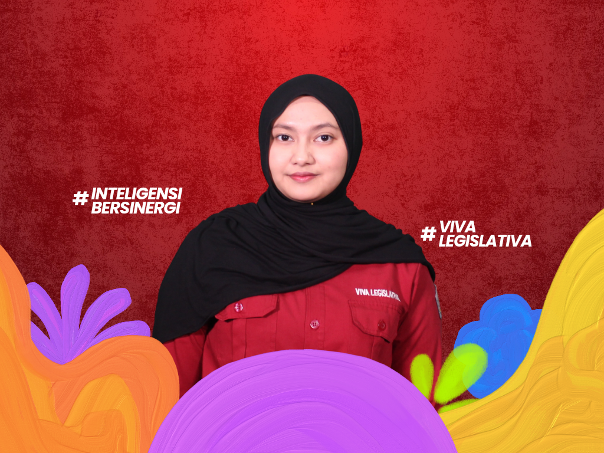
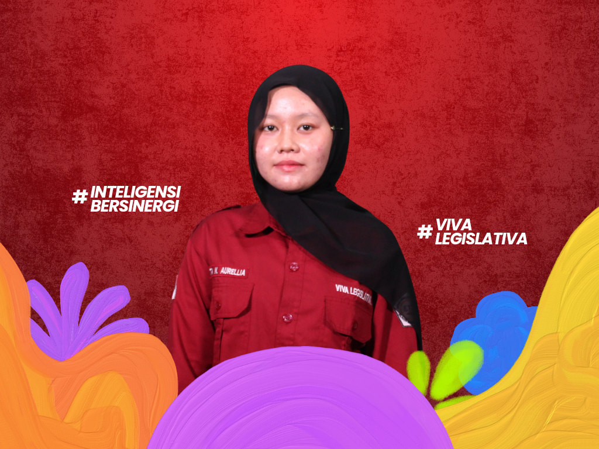
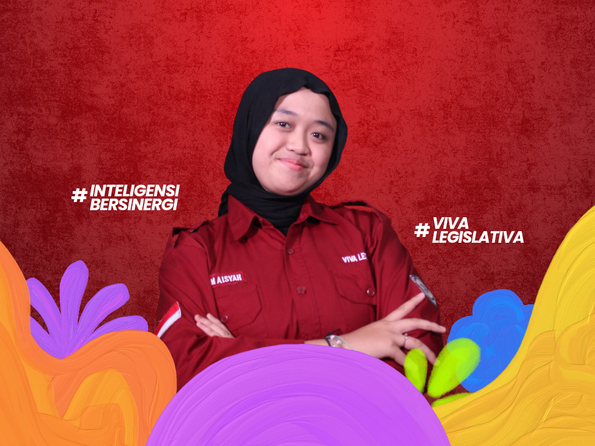
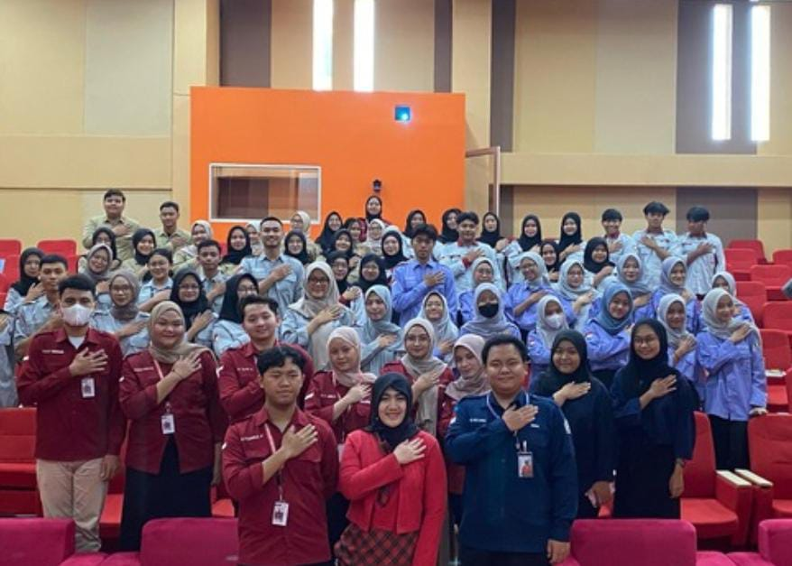
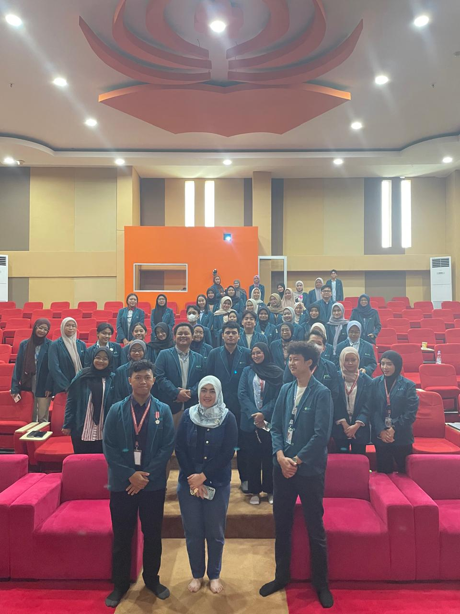
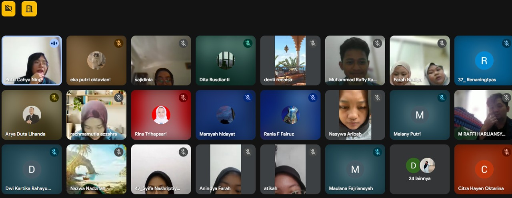
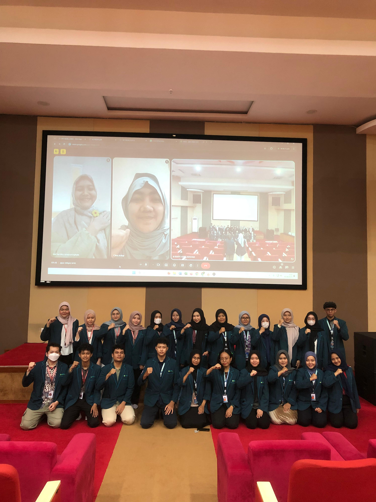

Komisi III Pengawasan Organisasi
Halo Mahasiswa Poltekkes Kemenkes Jakarta III!
Perkenalkan kami dari Komisi III Dewan Legislatif Mahasiswa Poltekkes Kemenkes Jakarta III Periode 2025. Yuk kenal kami lebih lanjut!

Yohan Tumanggor
Koordinator Komisi III

Farah Nadiya
Anggota Komisi III

Aqilla Nuha Humaira
Anggota Komisi III

M. Raffi Harliansyah
Anggota Komisi III

Meutia Hijrian
Anggota Komisi III

Tita Navita Auriella
Anggota Komisi III
Tugas Pokok Komisi III
-
Melakukan pemantauan dan pengawasan terhadap perencanaan program kerja BEM dan HMJ Poltekkes Kemenkes Jakarta III agar sesuai dengan AD/ART dan GBHO.
-
Melakukan pemantauan dan pengawasan terhadap pelaksanaan program kerja BEM dan HMJ Poltekkes Kemenkes Jakarta III agar sesuai dengan AD/ART dan GBHO.
-
Melakukan pemantauan dan pengawasan terhadap pelaporan kegiatan program kerja BEM dan HMJ Poltekkes Kemenkes Jakarta III agar sesuai dengan AD/ART dan GBHO.
Program Kerja Komisi III
-
Rapat Evaluasi HMJ I
Melaksanakan evaluasi terhadap program kerja HMJ selama 4 bulan terakhir setelah penetapan RAPBLK - RAKER dengan penilaian melalui form A2 serta penyampaian Kertas Kritik Saran dari Kementrian Dalam Negeri BEM.

-
Rapat Evaluasi HMJ II
Melaksanakan evaluasi terhadap program kerja HMJ selama 4 bulan terakhir setelah Rapat Evaluasi HMJ I dengan penilaian melalui form A2 serta penyampaian Kertas Kritik Saran dari Kementrian Dalam Negeri BEM.

-
Rapat Evaluasi HMJ III
Melaksanakan evaluasi terhadap program kerja HMJ selama 4 bulan terakhir setelah Rapat Evaluasi HMJ II dengan penilaian melalui form A2 serta penyampaian Kertas Kritik Saran dari Kementrian Dalam Negeri BEM.

-
Rapat Evaluasi BEM I
Melaksanakan evaluasi terhadap program kerja BEM selama 4 bulan terakhir setelah penetapan RAPBLK - RAKER dengan penilaian melalui form A2 serta penyampaian Kertas Kritik Saran dari Komisi II DLM.

-
Rapat Evaluasi BEM II
Melaksanakan evaluasi terhadap program kerja BEM selama 4 bulan terakhir setelah Rapat Evaluasi I dengan penilaian melalui form A2 serta penyampaian Kertas Kritik Saran dari Komisi II DLM.

-
Rapat Evaluasi BEM III
Melaksanakan evaluasi terhadap program kerja BEM selama 4 bulan terakhir setelah Rapat Evaluasi II dengan penilaian melalui form A2 serta penyampaian Kertas Kritik Saran dari Komisi II DLM.